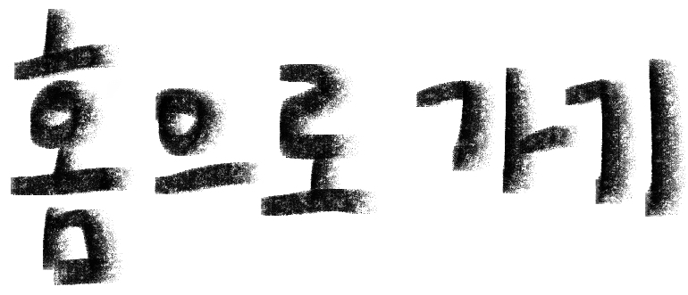
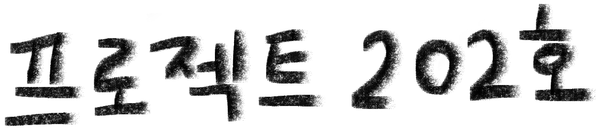
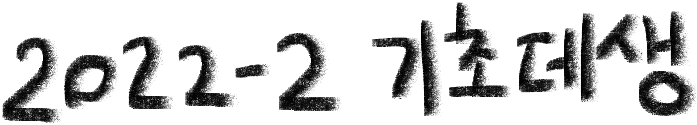
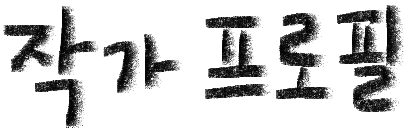

윤수현 Suhyun Yun
尹秀玹
1999.08.07
yoonsayoo@naver.com
<학력>
부산대학교 미술학과 4학년 재학
<경력 사항>
제 48회 부산미술대전 입선(2022)
<기타>
부산대학교 교지편집위원회 '효원' 포토그래퍼'(2021-2022)
아름지기 특별전 CONNECTING 도슨트(2022)
아시아프 학생아트매니저 14기 사진/영상 부문(2021)
김영사 서포터즈 14기(인스타툰)(2020)